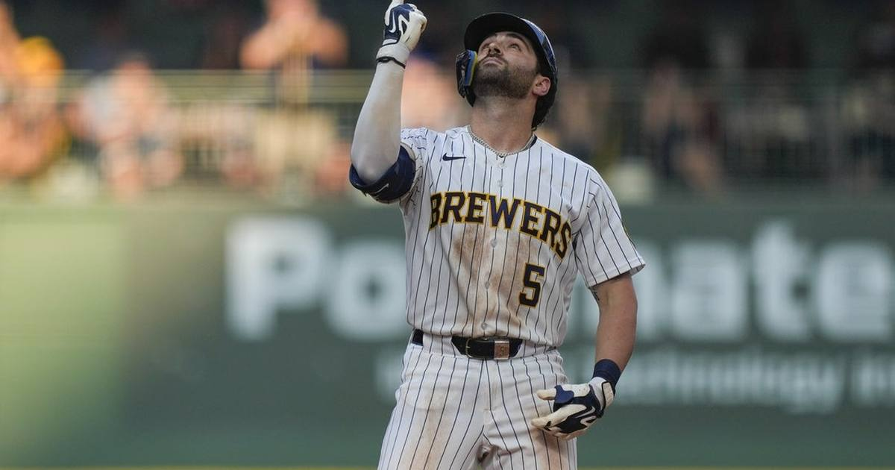

Brewers Sweep Dodgers, Reach First World Series Since 1982
Milwaukee rallied from four runs down in Game 4 to complete a four-game NLCS sweep of the Dodgers and earn its first World Series berth in 44 years.

Disclosure: this post contains affiliate links. I earn a commission on qualifying purchases.
Four Runs Down, Never Counted Out
The Milwaukee Brewers did it the hard way on Thursday night. Down 4-0 to the Los Angeles Dodgers early in Game 4, Milwaukee clawed all the way back to win 6-4 and complete a four-game sweep of the National League Championship Series. It's the franchise's first trip to the World Series since 1982 — a 44-year wait.
The Comeback
The Dodgers struck first and struck hard, building a four-run lead before Milwaukee's bats woke up. From there it was all Brewers:
• The rally: Milwaukee chipped away at the deficit inning by inning, refusing to let the sweep-clincher slip away in Los Angeles.
• The go-ahead blow: Garrett Mitchell's home run in the sixth inning put Milwaukee up for good — the defining swing of the night.
• The door slams shut: The Brewers' bullpen locked down the late innings to preserve the 6-4 final and finish off the sweep.
Why This One Hits Different
A 44-year gap between World Series appearances is one of the longest droughts in baseball. The last time Milwaukee played for a championship, the franchise was in the American League and fell to the St. Louis Cardinals in seven games in 1982. This 2026 club erased all of that in four games against the Dodgers.
The sweep also sends a message: this Brewers team doesn't flinch. Coming back from four down on the road with a pennant on the line takes a special kind of composure, and they had it from the first comeback at-bat to the final out.
What's Next
World Series Game 1: Oct. 23, at Milwaukee
Opponent: Guardians or Rays (winner of the ALCS)
Brewers' last World Series: 1982
Milwaukee opens the Fall Classic at home on October 23. The American League still needs to settle its pennant — the Guardians and Rays are battling in the ALCS — but one half of the World Series is decided, and for the first time in 44 years, it runs through Milwaukee.
Watch
Source: NLCS Game 4: Milwaukee Brewers vs. Los Angeles Dodgers HIGHLIGHTS 💥 | ESPN MLB — ESPN MLB. The video shows the Game 4 highlights: the Brewers' comeback from 4-0 down, Garrett Mitchell's go-ahead homer in the 6th, David Hamilton's 9th-inning insurance shot, and the final out that sealed the sweep.